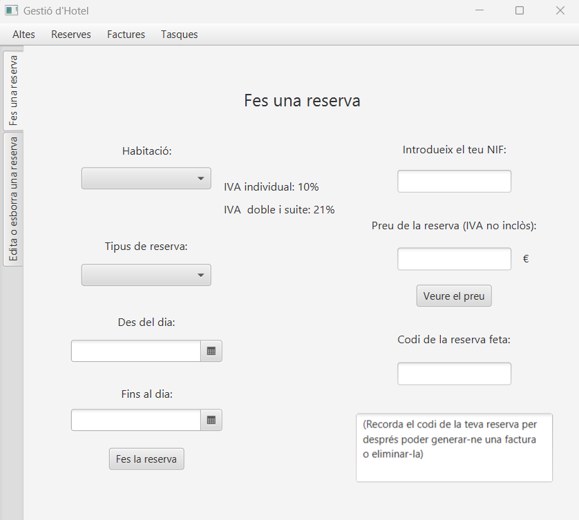
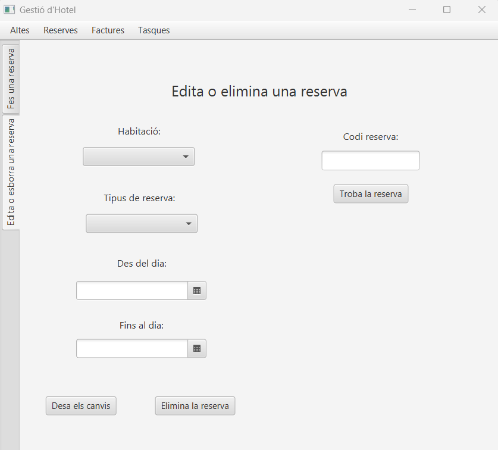

Manual d'ús del programa

Pàgina d'altes: Aquesta és la pàgina principal del programa. Des d'aquí podrem visualitzar tots els clients i empleats que hi ha a la nostra base de dades, podrem donar d'alta noves persones, nous clients i nous empleats. També hi haurà la possibilitat de crear una persona que al mateix temps sigui un client i un empleat.


Pàgina de reserves Aquesta pàgina té dues pestanyes. A la primera podrem introduïr les dades per

Pantalla d'informes: Aquesta pantalla mostra els informes generats pel programa. Pots filtrar els resultats per data o categoria i exportar els informes en diferents formats.